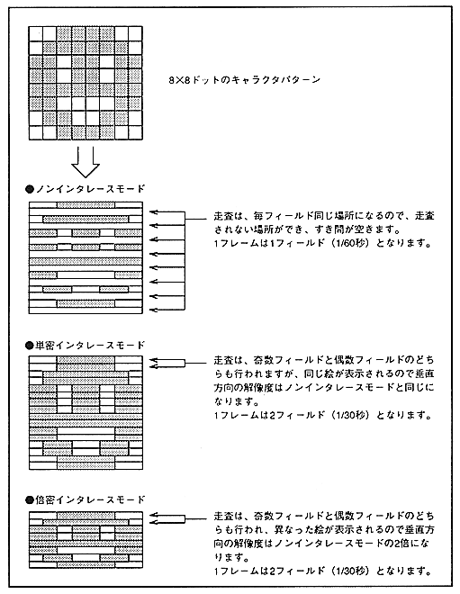

VDP2 interlace mode (screen scanning method) includes non-interlace, single density interlace, and double density interlace. In non-interlace mode, one frame is one field (1/60 second). In single density interlace mode, one frame consists of two fields (1/30 seconds), but the same image is displayed in even and odd fields. In double-dense interlace mode, one frame consists of two fields (1/30 seconds), and separate images are displayed for even and odd fields. In both the single density interlace mode and the double density interlace mode, there is no gap between the scan lines. Will be the same. Figure 2.1 shows how to display with interlace settings.
Figure 2.1 Display method with interlace settings
